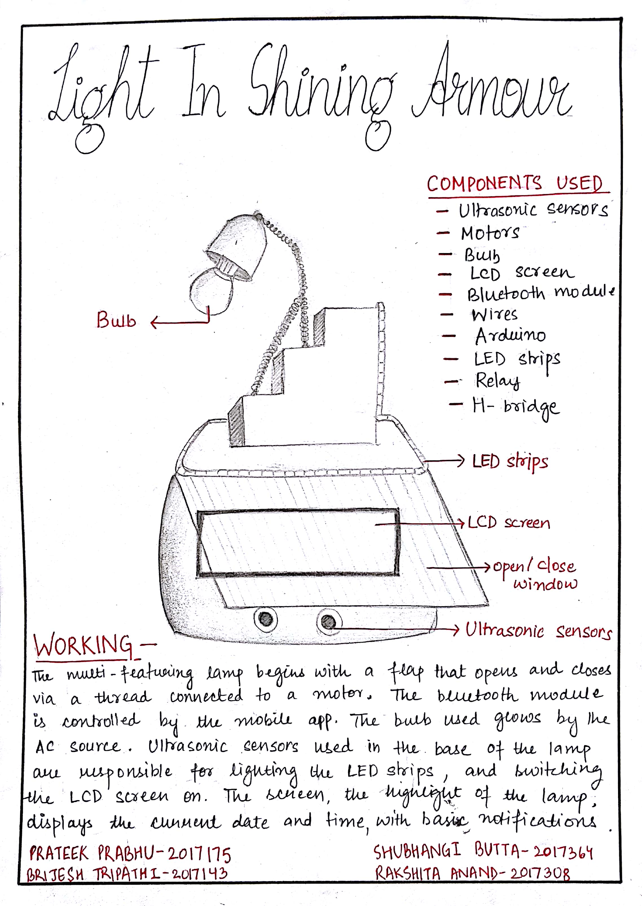
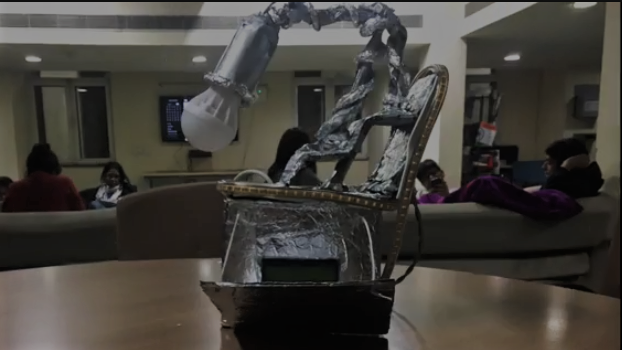
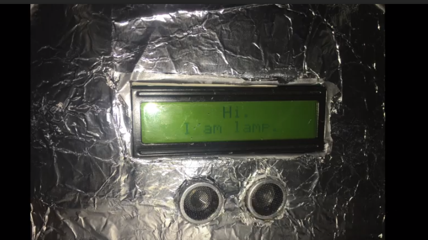
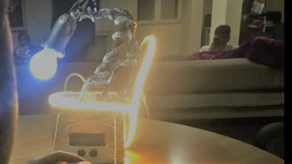
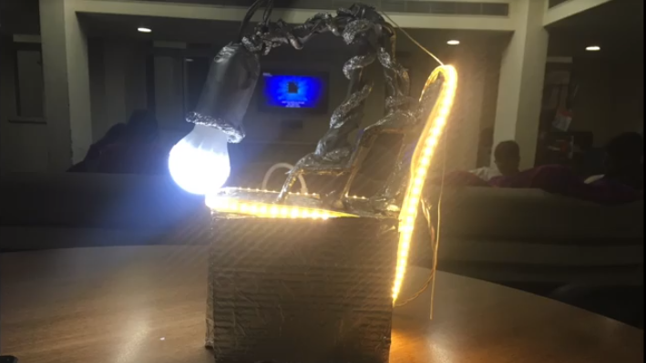

Flap- There are two threads attached to the flap that is there in front of the LCD screen. The threads attached to the DC motor connected to the circuit at the back of the lamp. The DC motor functions via the bluetooth app in the mobile phone.LCD Screen- There is an LCD screen the functioning of which is based on the ultrasonic sensors. Whenever the user comes close to the bulb, the LCD screen switched itself on, introduces itself for an interactive touch, and then shows the date, time and temperature of the respective day.LED Strips- The working of the LED lights is also in association with the ultrasonic sensors. They get swiched on as and when the user comes closer to the lamp. The LED strips brighten the structure of the lamp and also get the theme together in place.Central Bulb- The central bulb, which was intended to give the entire lamp also an aspect of the conventional bulb-lamps, functions by taking direct power supply from an AC source. This white light is the main source of light of the lamp. This, hence, completes all the features of 'A Light In Shining Armour'.